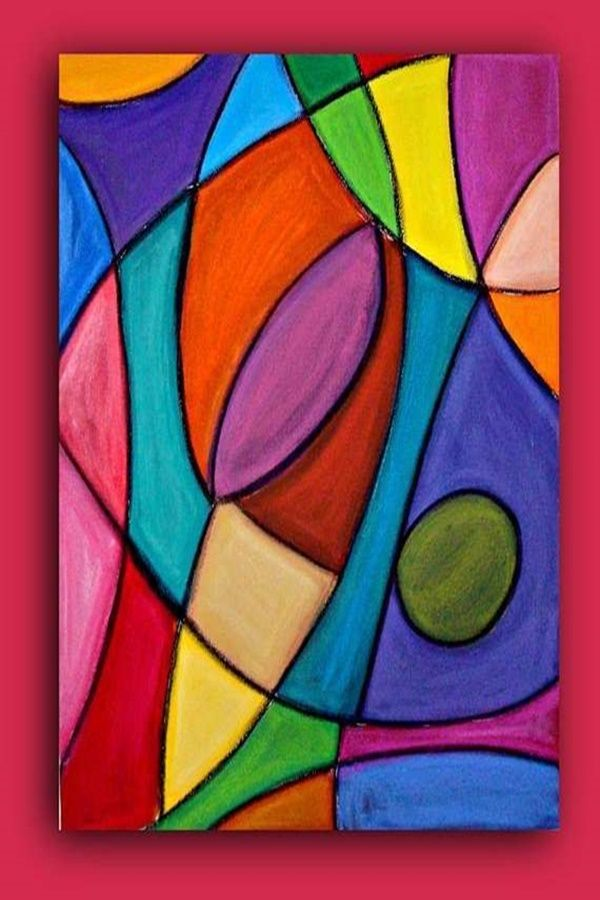

Abstract art is more than just random shapes and colors. It’s a creative expression
that allows the artist to communicate emotions, ideas, and imagination without needing to represent real objects.
The beauty of abstract art lies in how it invites the viewer to interpret it freely, making every piece unique to every person.
Famous artists like Wassily Kandinsky and Piet Mondrian helped shape the movement,
inspiring countless modern artists to experiment with form and color. As Kandinsky once said,
Color is a power which directly influences the soul.

How Digital Art is Changing Creativity
With today’s technology, digital art has become a new frontier for artists everywhere.
Tools like drawing tablets and software such as Photoshop or Procreate allow creators to bring ideas to life faster than ever.
What’s amazing is that digital art can blend traditional techniques with modern tools,
creating endless possibilities for expression.
The rise of NFTs and online galleries has also opened new ways for artists to share and even earn from their work.
As technology evolves, so does the definition of art itself.
“Art enables us to find ourselves and lose ourselves at the same time.” — Thomas Merton